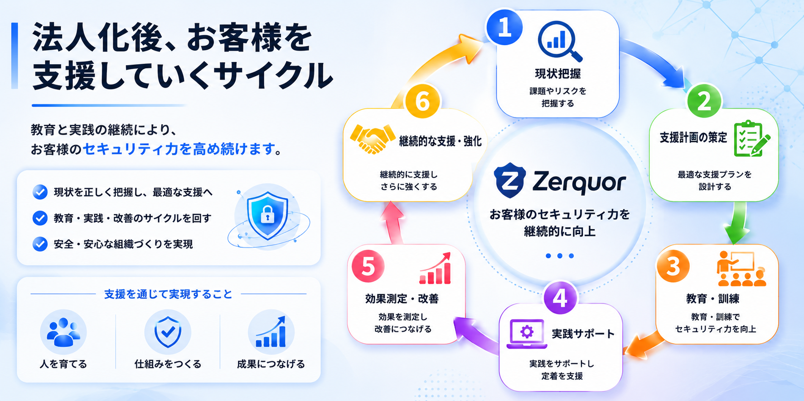

必要なのは分かるが、今すぐではない
優先順位が分からないまま後回しになっていませんか。 まずは、今すぐ必要な対策と後回しにできる対策を分けることが重要です。
セキュリティ対策が必要だと分かっていても、 中小企業では「何から始めるか」「誰が判断するか」「どこまで費用をかけるか」が曖昧になりがちです。
優先順位が分からないまま後回しになっていませんか。 まずは、今すぐ必要な対策と後回しにできる対策を分けることが重要です。
最初から大きな投資をする必要はありません。 教育、報告ルール、アカウント管理など、低コストで始められる対策から整理します。
総務・経理・代表者がITを兼任している企業でも大丈夫です。 経営者や管理部門にも分かる言葉で、判断材料を整理します。
最初にサービスを決める必要はありません。 現状を確認したうえで、研修・ルール整備・月額相談のどれが必要かを一緒に整理します。
セキュリティチェックシートや取引先からの確認に対して、 その場しのぎではなく、説明できる状態を整えます。
事故後は、復旧・原因調査・取引先説明・再発防止まで必要になります。 まずは、社員が迷わず報告できる状態を作ることから始めます。
セキュリティを難しいままにせず、中小企業が自社で判断し、続けられる形に落とし込みます。 製品導入ありきではなく、現状把握・教育・ルール・相談体制を組み合わせて支援します。
まずは、今ある環境で何ができていて、何が不足しているかを整理します。 必要な対策と後回しにできる対策を分け、無駄な投資を避けます。
偽メール、パスワード、添付ファイル、クラウド共有など、 日常業務で起こりやすいリスクを、現場の社員にも分かる言葉で伝えます。
ルールや教育の実施状況を整理し、 取引先からセキュリティ対応を確認された際に説明できる状態を目指します。
Zerquorは、現状把握から教育・実践・改善・継続支援までを一連の流れとして設計し、 お客様のセキュリティ力を継続的に高めていきます。

「何を頼めばよいか分からない」企業でも始めやすいように、 現状把握から研修、ルール整備、継続相談まで段階的に支援します。
現在の対策状況をヒアリングし、できていること・不足していること・優先して取り組むべきことを整理します。 「何から始めればよいか分からない」企業様向けの入口サービスです。
偽メール、パスワード、添付ファイル、クラウド利用、情報漏えい、事故時の報告など、 日常業務で起こりやすいリスクを分かりやすく解説します。
パスワード、アカウント管理、退職者対応、クラウド共有、USB利用、インシデント報告など、 中小企業がまず整えるべきルールを作成します。
専任担当者を置くのが難しい企業様向けに、月額制でセキュリティ相談先を提供します。 取引先からの確認、社内教育、ルール見直しなどを継続的に支援します。
いきなり大きな契約ではなく、まずは無料相談と現状把握から始めます。
現在のお悩み、従業員数、IT担当者の有無、教育状況、取引先からの要求などを確認します。
できていること・不足していること・優先順位を整理し、無理なく始められる対策を明確にします。
社員教育や最低限の社内ルールを整え、現場で迷わず判断できる状態を作ります。
月額相談により、取引先対応、教育の見直し、ルール更新などを継続的に支援します。
中小企業でも始めやすいように、小さく始められる料金設計にしています。 正式なお見積りは、企業規模・実施内容・支援範囲に応じてご提案します。
| サービス | 料金目安 | 内容 |
|---|---|---|
| 現状把握ライト | 10万円〜 | ヒアリング、簡易チェック、改善ポイント整理 |
| 現状把握レポート | 20万円〜 | 優先順位つき改善レポート、経営者向け説明 |
| 従業員向け研修 | 30万円〜 | 偽メール、情報漏えい、パスワード、クラウド利用など |
| 社内ルール整備支援 | 30万円〜 | アカウント管理、退職者対応、報告ルールなどの整備 |
| 月額セキュリティ相談 | 月5万円〜 | 月1回相談、軽微な相談対応、教育・ルール見直し |
※ 上記は目安です。企業規模や支援範囲により変動します。 ※ 製品販売を前提とした支援ではありません。
特に、専任担当者がいないものの、メール・クラウド・顧客情報・取引先対応が増えている企業様に適しています。
総務・経理・代表者がITを兼任しており、セキュリティ教育やルール整備まで手が回っていない企業様。
セキュリティチェックシートや取引先からの確認に対して、説明できる状態を整えたい企業様。
偽メール、パスワード、クラウド共有、情報漏えいなど、社員向けの基本教育を実施したい企業様。
お問い合わせ前に感じやすい不安をまとめました。
問題ありません。最初に現状を確認し、研修・ルール整備・月額相談のどれが必要かを一緒に整理します。
はい、可能です。Zerquorは、専任担当者がいない中小企業向けに、経営者・総務担当者にも分かりやすくご説明します。
製品導入ありきの支援ではありません。まずは、今ある環境でできる対策や、従業員教育、社内ルール整備からご提案します。
はい、事故前の相談をおすすめしています。事故後の対応よりも、事前に報告ルールや教育を整えておく方が、負担を小さくできます。
はい、可能です。従業員10〜100名規模の企業様を中心に、規模に合わせた支援を行います。
掲載内容はコーポレートサイト用の基本情報です。所在地や法人番号は、正式決定後に更新してください。
| 会社名 | 合同会社Zerquor |
|---|---|
| 代表者 | 仲村 拓馬 |
| 設立 | 2027年4月1日予定 |
| 資本金 | 100万円予定 |
| 事業内容 | 中小企業向け情報セキュリティ支援、セキュリティ現状把握、 従業員向け研修、社内ルール整備、月額セキュリティ相談 |
| 対応領域 | 偽メール対策、情報漏えい対策、アカウント管理、クラウド利用ルール、 取引先セキュリティ確認対応、セキュリティ教育 |
「何から始めればよいか分からない」という段階でも問題ありません。 現在の状況を伺い、必要な対策の優先順位を一緒に整理します。